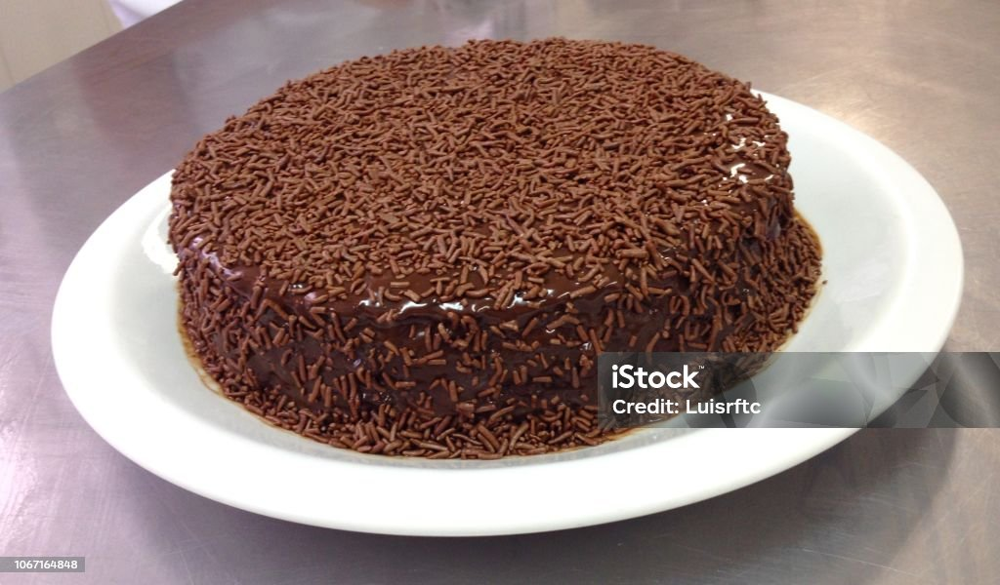

Pagina inicial
Bolo de Chocolate

Descrição
Não precisa de batedeira e nem de leite! Esse bolo de chocolate fica molhadinho e macio. O truque está nos detalhes: peneirar a farinha, usar água morna e não ativar o glúten da massa. A cobertura de chocolate amanteigada desmancha na boca.
Ingredientes da Massa
- 2 ovos
- 1 xícara de chá de açúcar
- 1 xícara de chá de chocolate em pó (ou achocolatado)
- 2 xícaras de chá de farinha de trigo com fermento
- 1 xícara de chá de água morna
- 1 xícara de chá de óleo morno
Ingredientes da cobertura
- 1 caixinha ou lata de leite condensado
- 1 colher de sopa de margarina
- 3 colheres de sopa de chocolate em pó (ou achocolatado)
- 200 gramas de granulado (opcional)
Passos
- Esquente a água e o óleo separadamente, não espere ferver para não cozinhar os ovos. Peneire a farinha, o chocolate e o açúcar para o bolo ficar com a massa leve e aerada, isso possibilita a entrada de ar nos ingredientes que ficam em pacotes compactos;
- Ligue o forno para preaquecer a 180 ºC. Quebre os ovos em um prato para verificar se não estão estragados. Em uma tigela grande, coloque os ovos, o açúcar e o chocolate em pó. Misture bem com um fouet (batedor de arame) ou garfo;
- Adicione a farinha de trigo com fermento e mexa novamente. Acrescente a água e o óleo, misturando delicadamente, não mexa muito e com força para não ativar o glúten da farinha de trigo, isso deixa a massa pesada;
- Unte uma forma de pudim média com manteiga e farinha de trigo ou chocolate em pó. Despeje a massa na forma e leve para assar no forno preaquecido, por cerca de 35 a 40 minutos, até espetar um palito no meio da massa e ele sair limpo;
- Em uma panela, coloque os ingredientes da cobertura, menos o granulado. Misture para incorporar;
- Em fogo baixo, cozinha a cobertura até engrossar no ponto desejado, cerca de 1 a 2 minutos. Se quiser a cobertura mais líquida, desligue o fogo antes, se quiser um ponto quase de brigadeiro, deixe um pouco mais no fogo, sempre mexendo para não grudar;
- Espere a cobertura amornar. Com um garfo, faça pequenos furos na superfície do bolo e despeje a cobertura, que entrará em contato a massa, deixando o bolo molhadinho;
- Salpique o granulado para finalizar e sirva. Bom apetite!
Fonte: Receitaria